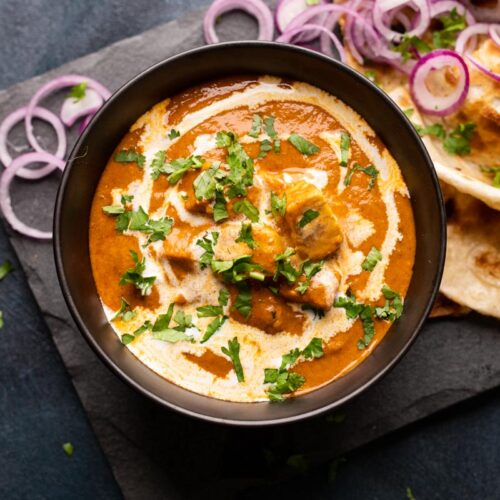

Shahi Paneer Recepie:

Description
Shahi Paneer is a creamy North Indian dish with paneer cubes in a rich gravy of cashews, cream, yogurt, and aromatic spices, garnished with nuts and cream, typically served with bread or rice.
Ingredients
- Paneer (Indian cottage cheese)
- Cashew nuts
- Cream
- Yogurt
- Spices (such as cardamom, cloves)
- Saffron (optional)
- Almonds or cashews (for garnish)
Steps:
- Cut paneer into cubes.
- Prepare the gravy: grind cashew nuts into a smooth paste.
- Heat cream in a pan, then add the cashew paste and yogurt.
- Add spices like cardamom and cloves, and saffron if desired.
- Simmer the gravy until it thickens.
- Add paneer cubes to the gravy and simmer for a few more minutes.
- Garnish with chopped almonds or cashews and a drizzle of cream.
- Serve Shahi Paneer hot with naan, roti, or rice.